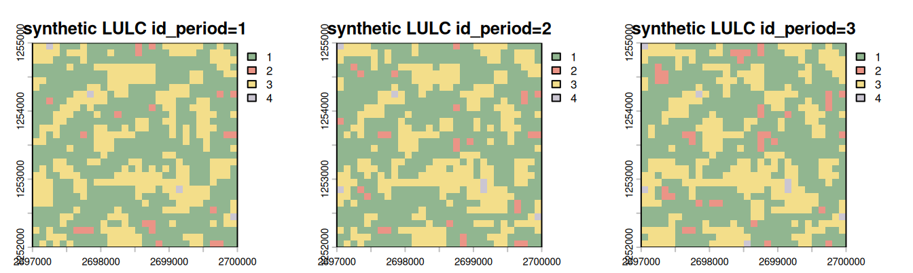
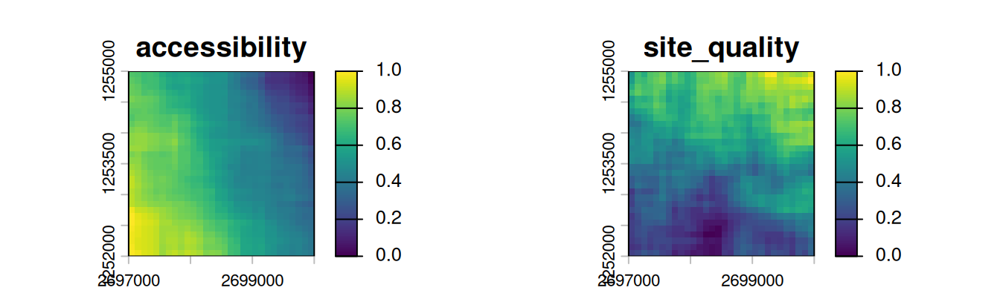
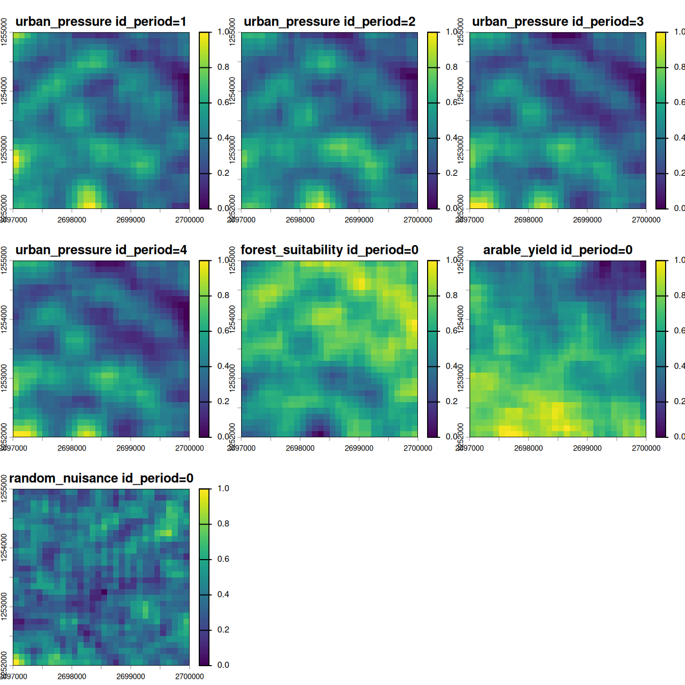
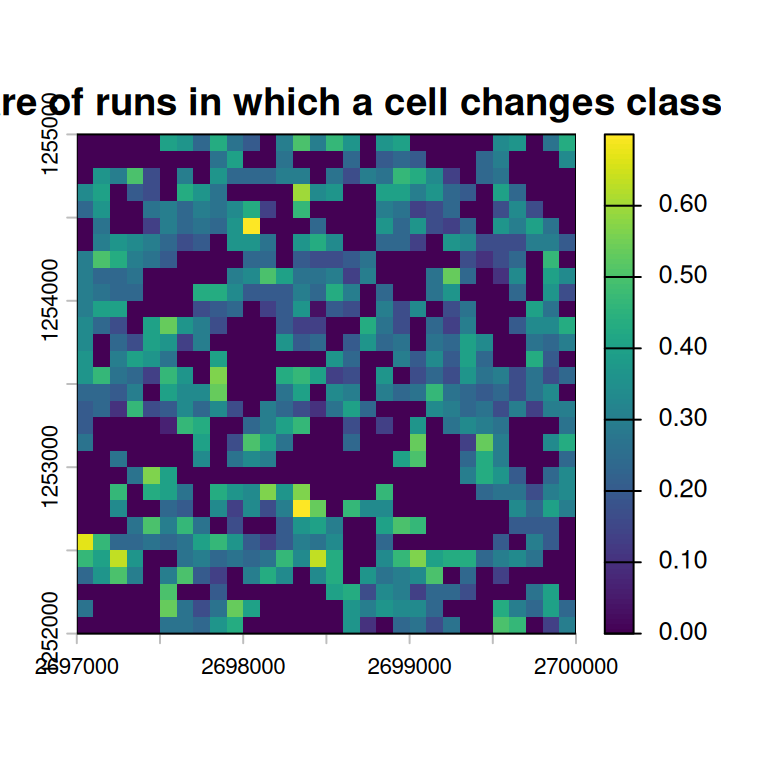
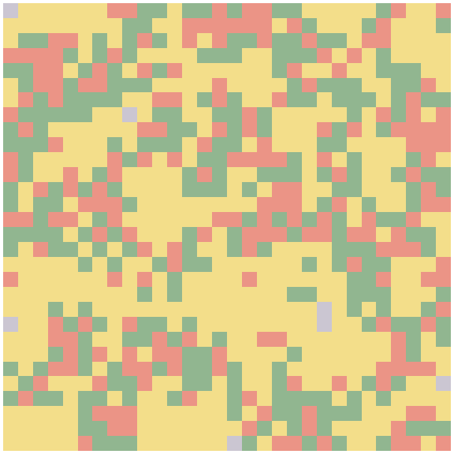
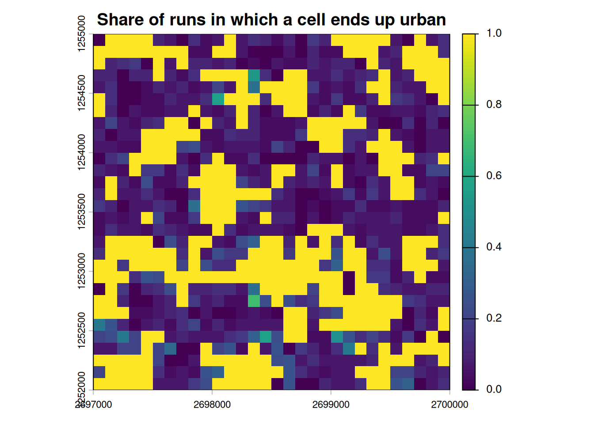

Stochastic allocation sensitivity with runs_t
2026-07-02
Source:vignettes/stochastic-allocation-sensitivity.qmd
Note: this tutorial assumes that you already know the basic evoland-plus workflow and the concepts of transition potentials, constrained demand, and patch-based allocation. The preceding tutorial introduced those ideas; here we focus on some advantages of evoland-style sensitivity analyses.
1 Why another tutorial?
The default tutorial walks through a single calibration-and-allocation workflow, ending with one extrapolated realization. That is a good first contact, but it hides an important property of patch-based allocators: once transition demand and transition potentials are fixed, the final pattern can still vary from run to run because allocation is stochastic.
For sensitivity analysis, a single map is therefore not enough. In this vignette we will:
- establish a simple synthetic model,
- register 30 allocation realizations in
runs_t, - allocate exactly one extrapolated period 30 times,
- compare each extrapolated realization to the last observed map, and
- summarize the results as a change-frequency heatmap showing where change happens consistently.
This is useful whenever you want to distinguish structurally robust change, i.e. cells that nearly always switch class.
2 Setup
We create a fresh on-disk database with some synthetic land use categories; we use a spatial domain of 30x30 cells on a square grid defined in meters and retain a template raster for later use; and we set up three “observed” periods to be filled with synthetic data, plus a single extrapolated period.
db <- evoland_db$new(path = "stochastic-sensitivity.evolanddb")
db$lulc_meta_t <- create_lulc_meta_t(
list(
forest = list(pretty_name = "Forest"),
arable = list(pretty_name = "Arable Land"),
urban = list(pretty_name = "Urban Areas"),
static = list(pretty_name = "Immutable")
)
)
template_rast <- terra::rast(
crs = "EPSG:2056",
extent = terra::ext(c(
xmin = 2697000,
xmax = 2697000 + 30 * 100,
ymin = 1252000,
ymax = 1252000 + 30 * 100
)),
resolution = 100
)
db$coords_t <- create_coords_t_square(
epsg = terra::crs(template_rast, describe = TRUE)$code |> as.integer(),
extent = terra::ext(template_rast),
resolution = terra::res(template_rast)[1]
)
db$periods_t <- create_periods_t(
period_length_str = "P10Y",
start_observed = "1995-01-01",
end_observed = "2020-01-01",
end_extrapolated = "2030-01-01"
)3 Synthetic observed data
As in the introductory vignette, we create a small autoregressive synthetic landscape with three observed raster layers. We then transform the synthetic raster stack into lulc_data_t records and attach id_run = 0L, which is the reserved base run for observed data.
Code
n_cells <- dim(template_rast)[1] * dim(template_rast)[2]
noise1 <- runif(n_cells, min = -0.5, max = 4.2)
noise2 <- noise1 + stats::rpois(n_cells, 0.1) - stats::rpois(n_cells, 0.1)
noise3 <- noise2 + stats::rpois(n_cells, 0.1) - stats::rpois(n_cells, 0.1)
synthetic_lulc <-
rast(template_rast, nlyrs = 3, vals = c(noise1, noise2, noise3)) |>
focal(w = 3, fun = mean, na.rm = TRUE) |>
clamp(lower = 0, upper = 4) |>
classify(
rcl = data.frame(from = 0:3, to = 1:4, becomes = c(2, 1, 3, 4)),
right = FALSE
) |>
setNames(paste0("synthetic LULC id_period=", 1:3))
plot(
synthetic_lulc,
nc = 3,
col = data.frame(
value = 1:4,
color = c("#91B690", "#EB9486", "#F3DE8A", "#CBC6D2")
)
)
Code
db$lulc_data_t <-
extract_using_coords_t(synthetic_lulc, db$coords_t)[,
.(
id_run = 0L,
id_coord,
id_period = substr(layer, 26, 26) |> as.integer(),
id_lulc = value
)
] |>
as_lulc_data_t()4 Predictors and neighborhoods
Here, we confabulate some predictors based on gradient based “latent” influences then used to construct an “accessibility” and “site quality” quantifier.
Code
# helper: scale raster to [0, 1]
scale01 <- function(x) {
rng <- terra::global(x, c("min", "max"), na.rm = TRUE)
(x - rng[1, 1]) / (rng[1, 2] - rng[1, 1])
}
# helper: smooth random field
smooth_field <- function(template, sd = 1, w = 7) {
terra::setValues(template, rnorm(terra::ncell(template), sd = sd)) |>
terra::focal(w = w, fun = mean, na.rm = TRUE) |>
scale01()
}
# coordinate-based gradients
xy <- terra::crds(template_rast, df = TRUE)
x_grad <- terra::setValues(template_rast, (xy$x - min(xy$x)) / (max(xy$x) - min(xy$x)))
y_grad <- terra::setValues(template_rast, (xy$y - min(xy$y)) / (max(xy$y) - min(xy$y)))
latent1 <- smooth_field(template_rast, sd = 1, w = 9)
latent2 <- smooth_field(template_rast, sd = 1, w = 5)
accessibility <- scale01(0.55 * (1 - x_grad) + 0.25 * (1 - y_grad) + 0.20 * latent1)
site_quality <- scale01(0.50 * y_grad + 0.35 * latent2 + 0.15 * x_grad)
c(accessibility, site_quality) |>
setNames(c("accessibility", "site_quality")) |>
plot()
These “drivers” are used to construct predictor variables that are somewhat correlated with the synthetic land use map we constructed earlier - we combine the drivers, noise, and land class occurrence density and normalize to .
Code
as_indicator <- function(x, class) {
terra::app(x, fun = function(v) as.numeric(v %in% class))
}
forest_share <-
as_indicator(synthetic_lulc, class = 1) |>
terra::focal(w = 5, fun = mean, na.rm = TRUE) |>
terra::mean()
arable_share <-
as_indicator(synthetic_lulc, class = 2) |>
terra::focal(w = 5, fun = mean, na.rm = TRUE) |>
terra::mean()
urban_share <-
as_indicator(synthetic_lulc, class = 3) |>
terra::focal(w = 5, fun = mean, na.rm = TRUE)
make_dynamic <- function(base_context, static1, static2, noise_weight = 0.10) {
out <- vector("list", terra::nlyr(base_context))
for (i in seq_len(terra::nlyr(base_context))) {
noise_i <- smooth_field(template_rast, sd = 1, w = 5)
# fmt: skip
out[[i]] <- scale01(
0.55 * base_context[[i]] +
0.25 * static1 +
0.10 * static2 + noise_weight * noise_i
)
}
terra::rast(out)
}
urban_pressure <-
make_dynamic(
base_context = urban_share,
static1 = accessibility,
static2 = 1 - site_quality
)
add(urban_pressure) <-
# fmt: skip
scale01(
0.60 * urban_pressure[[3]] +
0.25 * urban_share[[3]] +
0.10 * accessibility +
0.05 * smooth_field(accessibility)
)
names(urban_pressure) <-
paste0("urban_pressure id_period=", 1:4)
forest_suitability <-
make_dynamic(
base_context = forest_share,
static1 = site_quality,
static2 = 1 - accessibility
) |>
setNames("forest_suitability id_period=0")
arable_yield <-
make_dynamic(
base_context = arable_share,
static1 = 1 - site_quality,
static2 = accessibility
) |>
setNames("arable_yield id_period=0")
# optional nuisance predictor that should usually score poorly
random_nuisance <-
smooth_field(template_rast, sd = 1, w = 3) |>
setNames("random_nuisance id_period=0")
plot(c(urban_pressure, forest_suitability, arable_yield, random_nuisance))
Now we can declare minimal predictor metadata and transform it into tabular form.
Code
db$pred_meta_t <-
create_pred_meta_t(list(
urban_pressure = list(
description = "synthetic confabulation",
data_type = "float"
),
forest_suitability = list(
description = "synthetic confabulation",
data_type = "float"
),
arable_yield = list(
description = "synthetic confabulation",
data_type = "float"
),
random_nuisance = list(
description = "synthetic confabulation",
data_type = "float"
)
))
db$pred_data_t <-
extract_using_coords_t(
c(urban_pressure, forest_suitability, arable_yield, random_nuisance),
db$coords_minimal
)[, layer := as.character(layer)][,
.(
id_coord,
id_run = 0L,
id_period = substr(layer, nchar(layer), nchar(layer)) |> as.integer(),
id_pred = fcase(
grepl("urban_pressure", layer) , 1L ,
grepl("forest_suitability", layer) , 2L ,
grepl("arable_yield", layer) , 3L ,
grepl("random_nuisance", layer) , 4L
),
value
)
] |>
as_pred_data_t()Now we add a simple set of neighbor relations as predictors.
Code
db$set_neighbors(
max_distance = 1000,
distance_breaks = c(0, 300, 1000),
quiet = TRUE
)Code
db$generate_neighbor_predictors()Messages
Computed 208360 neighbor relationships Appended 8 neighbor predictor variables with 16759 data points
5 Calibration
5.1 Eligible transitions and predictor pruning
Here we subset the number of eligible transitions according to number of observed transitions. Then we construct a full set of transition/predictor permutations and use it to estimate each predictor’s utility for each transition. We then retain the best 3 predictors per transition. These will then be used to train models.
db$trans_meta_t <- create_trans_meta_t(
db$trans_v,
min_cardinality_abs = 20,
exclude_anterior = 4 # exclude immutable class
)
db$set_full_trans_preds()[1] 36
trans_pred_scored <- db$get_pred_filter_score(
filter = mlr3filters::FilterImportance$new(
learner = mlr3::lrn("classif.rpart")
)
)
db$commit(
trans_pred_scored[order(-importance)][, head(.SD, 3), by = id_trans], # top three per id_trans
"trans_preds_t",
method = "overwrite"
)[1] 9Messages
Processing 3 transitions...
5.2 Transition models
Here, we train one single model per transition; see the main tutorial for an illustration on how to train multiple partials on split samples to assess their goodness of fit.
trans_models <- db$fit_full_models(learner = mlr3::lrn("classif.rpart"))Messages
Fitting full models for 3 transitions...
One subtlety is worth calling out, because it is easy to trip over in a stochastic setting. Model fitting does not necessarily produce a usable model for every viable transition: a rare transition can fail to train – for example a classif.rpart tree that never splits, or too few positive cases in the random draw of the synthetic data – in which case its learner_full is left empty (NULL). Such a transition would stay is_viable == TRUE yet have no model, and allocation (which predicts a potential for every viable transition) would then abort with No fitted model for viable transition(s): .... We keep the viable set and the fitted models in lockstep by demoting any transition whose full model did not train, reading the result returned by fit_full_models() directly:
trans_meta_reconciled <- db$trans_meta_t
trans_meta_reconciled[, is_viable := is_viable & id_trans %in% modeled_trans]
db$trans_meta_t <- trans_meta_reconciled5.3 Transition rates and baseline allocation parameters
We prescribe a set of transition rates (i.e. share of cells to transition from one land use to another) that are to be used in period 4.
db$trans_rates_t <-
# fmt: skip
rowwiseDT(
id_trans = , rate = ,
1, 0.3,
2, 0.2,
3, 0.1,
4, 0,
5, 0,
6, 0.2
)[, `:=`(
id_run = 0L,
id_period = 4L,
count = n_cells * rate
)] |>
as_trans_rates_t()
db$alloc_params_t <-
db$create_alloc_params_t(n_perturbations = 0)[, id_run := 0L]Messages
Computing allocation parameters for 3 transitions across 2 periods... Processing period 1 -> 2 Processing period 2 -> 3 Aggregating parameters across periods... Creating 0 randomly perturbed versions per transition... Successfully computed 3 allocation parameter sets (3 transitions x (0 perturbations + best estimate))
6 Registering stochastic realizations in runs_t
The central idea of this tutorial is that each stochastic allocation is a separate run. We therefore create 30 run records and propagate the same baseline allocation parameters to each run.
As with all evoland tables, runs_t only ensures a minimum set of columns, so we can add the kind and seed columns when overwriting.
runs_new <-
data.table(
id_run = 0:30, # base run 0 & stochastic runs 1:30
parent_id_run = NA_integer_, # NA for the scenario root
description = "base",
kind = "synthetic 'historical' case",
seed = 666L
)[
id_run > 0,
`:=`(
parent_id_run = 0L,
description = paste("stochastic allocation", id_run),
kind = "allocation sensitivity",
seed = id_run + 100L
)
]
db$commit(as_runs_t(runs_new), "runs_t", method = "overwrite")[1] 31
runs_out <- db$runs_t[id_run > 0]
run_ids <- runs_out$id_runNote that we do not copy the allocation parameters into each run. Every stochastic run is registered with parent_id_run = 0, so the run lineage lets each one inherit the baseline alloc_params_t (and the rest of the calibration) from run 0 automatically. This guarantees that all differences among runs arise from the allocator’s stochasticity – driven by the per-run seed – and not from differing parameters.
7 Running one extrapolated period 30 times
We only allocate the first extrapolated period. This makes the comparison easier to interpret: every realization starts from the same observed state. We loop over the run records: for each run we set the active db$id_run – which controls both the lineage that allocation reads from and the id_run stamped on the results it writes – and then allocate the single extrapolated period (id_period = 4) using that run’s seed. Because only the seed changes between iterations, the resulting maps differ purely through allocation stochasticity.
8 Summarizing stochastic sensitivity
A convenient first summary is binary: for each cell we ask whether its simulated class differs from the last observed class. Averaging that binary indicator over 30 realizations gives a change frequency between 0 and 1.
-
0means the cell never changes. -
1means the cell always changes. - intermediate values indicate uncertainty induced by the allocator.
db$id_run <- NULL # setting to NULL to access all records
# 900 locations x 1 observation = 900 rows
observed_last <- db$fetch("lulc_data_t", where = "id_run = 0 and id_period = 3")[,
.(id_coord, id_lulc_observed = id_lulc)
]
# 900 locations * 30 runs = 27000 rows
simulated_extrap <- db$fetch("lulc_data_t", where = "id_run > 0 and id_period = 4")[,
.(id_run, id_coord, id_lulc_simulated = id_lulc)
]
change_maps <-
simulated_extrap[
observed_last,
on = .(id_coord)
][,
.(
n_changed = sum(id_lulc_simulated != id_lulc_observed) |> as.double(),
p_changed = mean(id_lulc_simulated != id_lulc_observed),
observed = id_lulc_observed[1] |> as.double(),
mode_simulated = id_lulc_simulated |> tabulate() |> which.max() |> as.double()
),
by = .(id_coord)
] |>
data.table::melt(id.vars = "id_coord") |>
tabular_to_raster(coords = db$coords_minimal, value_col = "value")The chunk above melts these four per-cell summaries into long form and rasterizes them with tabular_to_raster(), producing one map layer per statistic. Below we plot the change-frequency layer as a heatmap.
9 Heatmap of stochastic change consistency
plot(
change_maps$variable_p_variable_changed,
main = "Share of runs in which a cell changes class"
)
The interpretation is straightforward:
- cooler / lighter cells are stable under repeated allocation,
- warmer / darker cells change consistently and may reflect strong transition potential and/or limited competition, and
- mid-range cells reveal locations where several cells compete for a limited transition demand and small stochastic differences decide which ones actually convert.
In other words, this map is not a transition-potential surface. It is a realization-frequency surface.
10 Inspecting individual realizations
The aggregate heatmap compresses 30 runs into a single surface. It is also worth looking at the individual realizations to get an intuition for how much the allocator actually moves things around from one run to the next. Rather than printing 30 static panels, we stitch the realizations into a short looping animation – one frame per run.
realisation_rasters <-
simulated_extrap |>
tabular_to_raster(coords = db$coords_minimal, value_col = "id_lulc_simulated")
lulc_palette <- data.frame(
value = 1:4,
color = c("#91B690", "#EB9486", "#F3DE8A", "#CBC6D2")
)
# one plot per layer -> one GIF frame per realization
for (i in seq_len(terra::nlyr(realisation_rasters))) {
plot(
realisation_rasters[[i]],
legend = FALSE,
axes = FALSE,
mar = c(0.1, 0.1, 0.1, 0.1),
main = paste0("Realisation ", i, " / ", terra::nlyr(realisation_rasters)),
col = lulc_palette
)
}
Even with identical calibration, transition rates, and allocation parameters, local differences appear across runs. The heatmap above compresses those differences into a robust summary.
11 Optional: class-specific consistency maps
The previous heatmap asked only whether a cell changes at all. You can build more targeted summaries in the same way. For example, the next chunk computes the frequency with which a cell becomes urban.
urban_frequency <-
simulated_extrap[,
.(
p_urban = mean(id_lulc_simulated == 3L) #urban id
),
by = .(id_coord)
] |>
tabular_to_raster(db$coords_minimal, value_col = "p_urban")
plot(
urban_frequency,
main = "Share of runs in which a cell ends up urban",
)
This is often the more policy-relevant view if stakeholders care about a specific target class rather than generic change.
12 What runs_t buys you
In a small tutorial like this, we could have stored realizations in ad hoc objects. Using runs_t is better because it scales to more serious experiments:
- each realization is explicitly registered,
- run-level metadata such as seeds, scenario labels, or parameter sets can be stored alongside the simulation,
- downstream summaries can be grouped by run families, and
- the same database structure can later support sensitivity analysis, parameter sweeps, or scenario ensembles.
A natural next step would be to combine between-run stochasticity (shown here) with between-parameter variability by creating multiple allocation parameter sets per scenario and multiple stochastic replicates per parameter set.
Repeated allocation changes the interpretation of the model output:
- one extrapolated map is a draw,
- the stack of 30 realizations is an ensemble, and
- the heatmap of change frequency is a compact way to communicate where the ensemble is robust and where it is uncertain.
That makes runs_t more than bookkeeping: it becomes the backbone for uncertainty-aware land use change analysis.